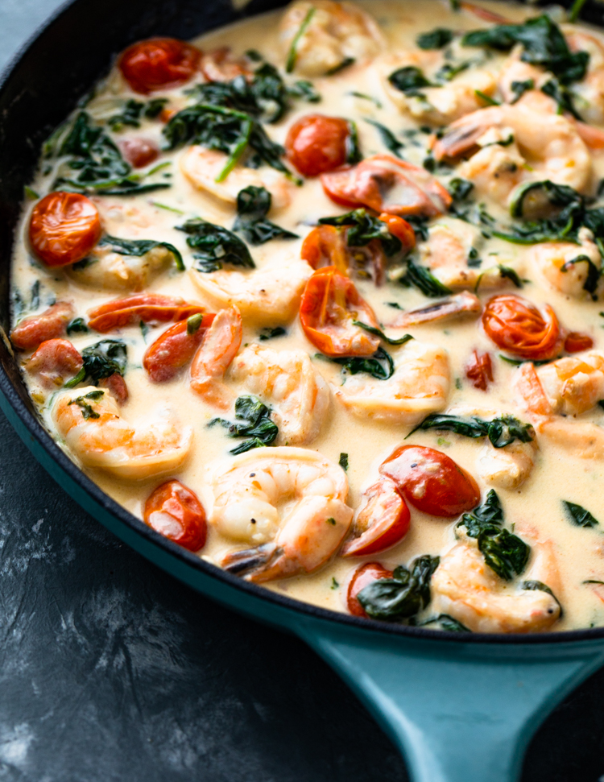

Creamy Tuscan Garlic Shrimp

Description
Tuscan Garlic Shrimp is the most amazing creamy shrimp dish. A creamy garlic parmesan sauce with spinach and sun-dried tomatoes creates an unforgettable restaurant quality meal right at home!
Ingredients
- 1½ pounds large shrimp peeled and deveined
- 3 garlic cloves minced
- 2 Tablespoons olive oil
- 1 cup heavy cream
- ½ cup chicken broth
- 1 teaspoon garlic powder
- 1 teaspoon Italian seasoning
- ½ cup parmesan cheese
- 1 cup spinach chopped
- ½ cup sun-dried tomatoes
Instructions
- In a large skillet add olive oil and cook the shrimp and garlic on medium high heat for 2-3 minutes or until pink. Remove shrimp and set aside on a plate.
- Add the heavy cream, chicken broth, garlic powder, italian seasoning, and parmesan cheese. Whisk over medium high heat until it starts to thicken.
- Add the spinach and sundried tomatoes and let it simmer until the spinach starts to wilt.
- Add the shrimp back to the pan and serve over pasta if desired.
Nutrition Facts
Serves: 4
Calories532kcal (27%)
Carbohydrates12g (4%)
Protein43g (86%)
Fat35g (54%)
Saturated Fat17g (85%)
Cholesterol519mg (173%)
Sodium1693mg (71%)
Potassium747mg (21%)
Fiber2g (8%)
Sugar5g (6%)
Vitamin A1795IU (36%)
Vitamin C17.6mg (21%)
Calcium468mg (47%)
Iron5.4mg (30%)